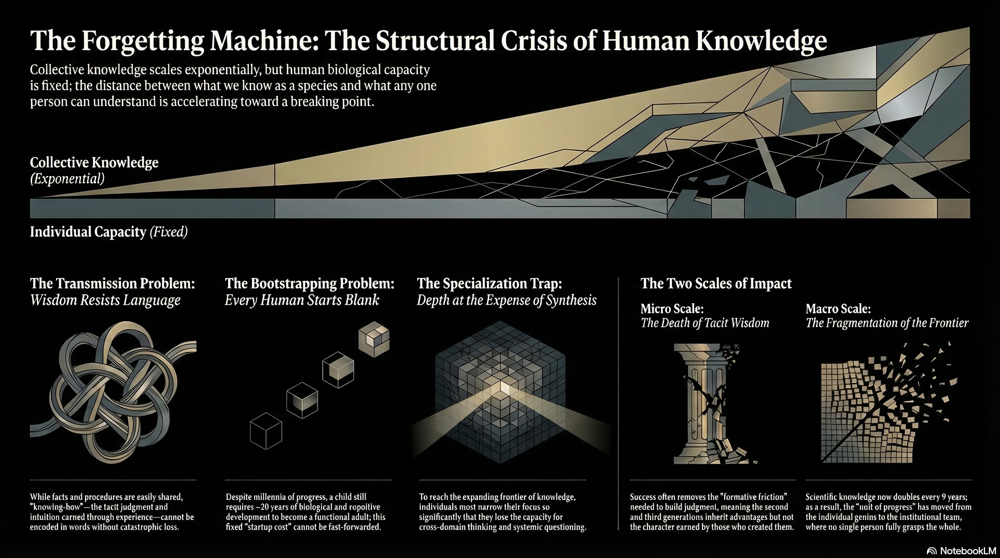

Collective knowledge scales exponentially, but human biological capacity is fixed. The distance between what we know as a species and what any one person can understand is accelerating toward a breaking point.
While facts and procedures are easily shared, "knowing-how" — the tacit judgment and intuition earned through experience — cannot be encoded in words without catastrophic loss.
Despite millennia of progress, a child still requires ~20 years of biological and cognitive development to become a functional adult. This fixed startup cost cannot be fast-forwarded.
To reach the expanding frontier of knowledge, individuals must narrow their focus so significantly that they lose the capacity for cross-domain thinking and systemic questioning.
Success often removes the "formative friction" needed to build judgment, meaning the second and third generations inherit advantages but not the character earned by those who created them.
Scientific knowledge now doubles every 9 years. As a result, the "unit of progress" has moved from the individual to the institutional team, where no single person fully grasps the whole.
"The Forgetting Machine is the machine we forgot to build."
